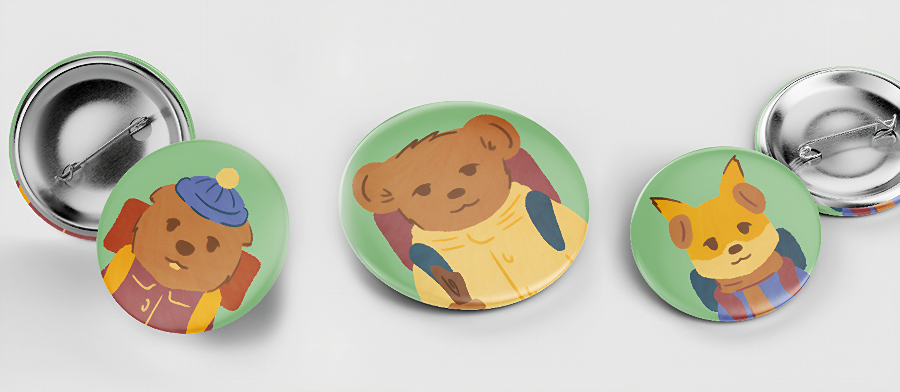
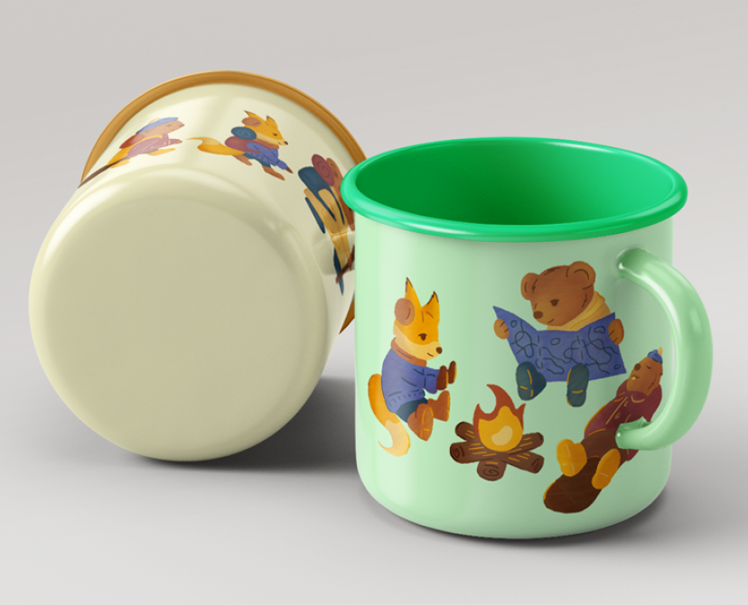
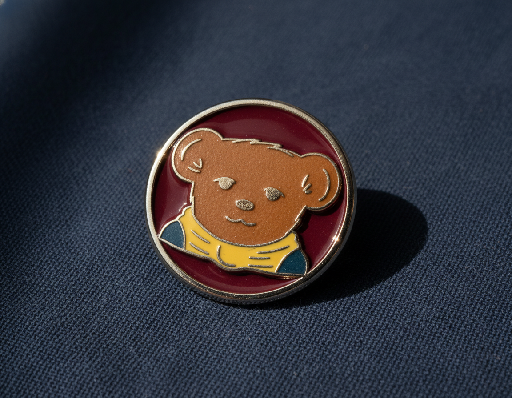
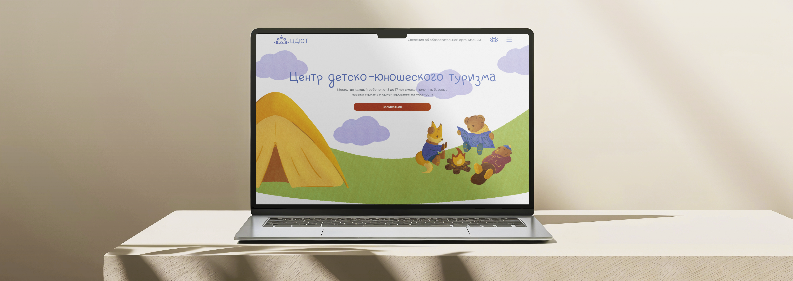
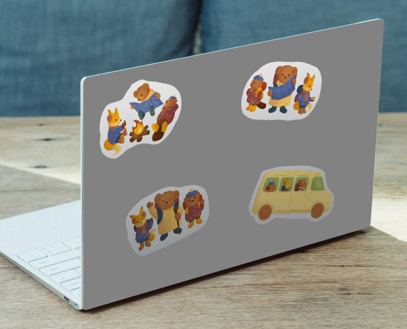
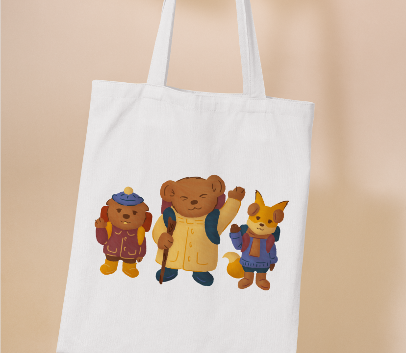

Маскоты Центра детско-юношеского туризма
2023
Суть проекта
Разработаны маскоты для Центра детско-юношеского туризма. Главным маскотом бренда является мишка – товарищ, который всегда готов прийти на помощь. Его друзья – бобренок и лисичка. В серии разработанных иллюстраций персонажи попадают в различные ситуации, которые часто происходят в походах.
В дизайне маскотов используются текстуры карандаша и «небрежный» лайн, за счет чего достигается эффект детского рисунка.
Проделанная работа
Разработаны значки отрядов Центра, стикеры и кружки с иллюстрациями. Также был разработан макет веб-сайта с фирменными иллюстрациями.




